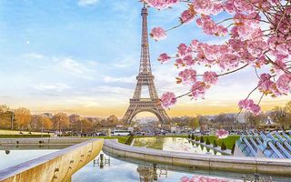
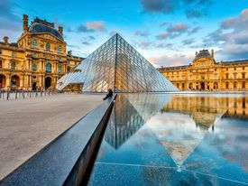
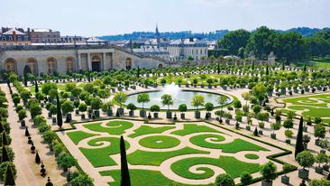
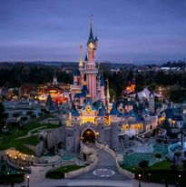
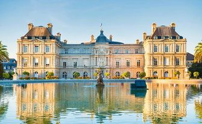

The Eiffel Tower
The Eiffel Tower in Paris, France, has serious celeb status. Completed in March 1889, it's one of the most recognizable monuments in the world. And the site, which is also known as the Iron Lady, receives nearly seven million tourists a year.
The Eiffel Tower is made almost entirely of open-lattice wrought iron. Gustave Eiffel used his advanced knowledge of the behavior of metal arch and metal truss forms under loading to design a light and airy but strong structure that presaged a revolution in civil engineering and architectural design. Its height and unique silhouette floating above the Paris landscape quickly made the Eiffel Tower one of the most popular attractions in Paris. The Tower's destiny is closely linked to that of the city of Paris, the capital of France and the Eiffel Tower's owner.

The Eiffel Tower has been witnessed to many proposals of marriage, first kisses and declarations of love, making it a must-visit for any couples who are in love. Every evening, sparkling with lights, the Eiffel Tower offers even more romantic attractions.
Louvre Museum, Paris
The Louvre is the world's largest museum with an extremely impressive art collection. It is located along the Seine River in Paris, France. The louvre was originally built as a fortress, then reconstructed to a royal palace. When Louis XIV moved the royal residence to Versailles, the Louvre became an art museum. The Louvre includes Egyptian antiques, crown jewels, Greek and Roman Sculptures, as well as other French noble artifacts. It houses more than 35,000 works of art at any time. Most of the artwork spans from 6th century B.C. to 19th century A.D. The museums most famous piece is Leonardo da Vinci's "Mona Lisa". The Code of Hammurabi, the Greek sculpture "Nike of Samothrace" and "Venus de Milo" are also notable masterpieces.

The "Mona Lisa" is the best known and most visited piece of art. It is a portrait painting done by Leonardo de Vinci. The portrait is an oil painting on a white Lombardy poplar panel. The woman in the portrait is sat upright in an armchair, with her arms folded. This painting was one of the first portraits that depicted the sitter in front of an imaginary landscape.
Luxembourge Palace
This historical building was originally constructed in the 1600s and declared a National Palace in 1791, then after the French Revolution it became home to the French Senate, which it still is today, and located within the Luxembourg gardens, you have the opportunity of discovering this incredible monument in Paris.

The palace is now the home of the French Senate since 1799-1805 and was enlarged in 1835-56. Luxembourg Palace was built in the first half of the 17th century as a royal residence. It has had some really interesting and intriguing history. Today it is the place where the Senate, part of the French Parliament meets. The Luxembourg Palace (known in French as the Palais du Luxembourg) is a former royal palace in Paris, France. Since 1958 it has been the seat of the French Senate of the Fifth Republic. The building while home of Gaston, Duke of Orléans.
Disneyland
Disneyland Paris is an entertainment resort in Cheesy, France, 32 kilometers (20 miles) east of Paris. It encompasses two theme parks, resort hotels, a shopping, dining and entertainment complex, and a golf course. Disneyland Park is the original theme park of the complex, opening in 1992.

Disneyland is a marvelous theme park and invention that millions of people go to. Disneyland Paris is certainly a park perfect for families, with lots of rides that kids of all ages will love. It was created when Walt Disney wanted to have fun with his children. He used his money to build a theme park where children and adults can go on rides together. He called it Disneyland. Disneyland Park is a collection of adventures, rides, and shows symbolized by the Disney characters and Sleeping Beauty Castle. It's divided into nine subareas, or "lands," arranged around a central hub.
Château de Versailles
Versailles is one of the largest, most elaborate, royal palaces ever built. This huge and magnificent palace started as a hunting lodge that was built for King Louis XIII in 1624. The small lodge was the beginning of an extremely huge palace that would cost the French government more than they could imagine. Louis XIV (The Sun King) built Versailles to be his home. To Louis, a magnificent palace was a must for royal life. All of the kings and nobles had to have wonderfully decorated palaces (houses), with beautiful paintings, ballrooms, and expensive furniture.

In 1774, Louis XV died leaving a huge debt to his grandson Louis XVI. Even though he was incredibly in debt, Louis XVI had all the gardens redone right away. Perhaps this is why the French Government went bankrupt in 1788, and they had to give up the palace. All of the furniture was sold and all the art was brought to museums. The palace was left empty. The French government decided to open up the palace as